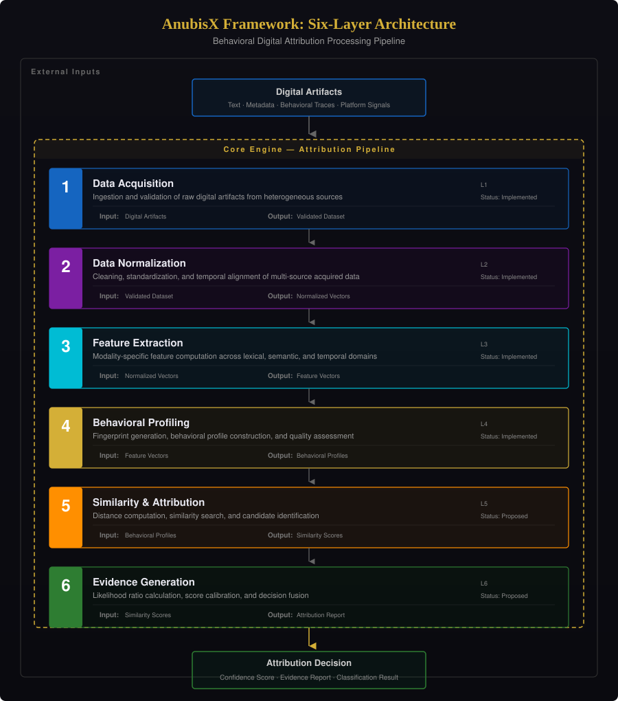
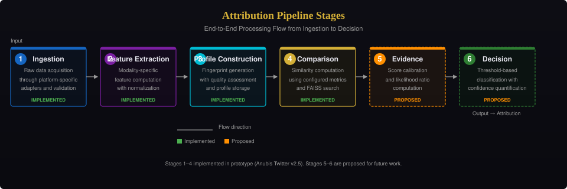

Framework Architecture

Six-Layer Architecture
| Layer | Responsibility | Implementation Status |
|---|---|---|
| 1 — Data Layer | Raw data ingestion, validation | IMPLEMENTED (Twitter adapter) |
| 2 — Feature Layer | Modality-specific extraction | IMPLEMENTED (stylometric) |
| 3 — Profile Layer | Profile construction, storage | IMPLEMENTED (SQLite) |
| 4 — Comparison Layer | Similarity computation | IMPLEMENTED (FAISS) |
| 5 — Evidence Layer | Score calibration, fusion | NOT IMPLEMENTED |
| 6 — Decision Layer | Identity decision, reporting | NOT IMPLEMENTED |
Six-Stage Pipeline

- Ingestion — Data acquisition through platform-specific adapters.
- Feature Extraction — Modality-specific feature computation with normalization.
- Profile Construction — Fingerprint generation with quality assessment.
- Comparison — Similarity computation using configured metrics.
- Evidence Evaluation — Score calibration and likelihood ratio computation.
- Decision — Threshold-based classification with confidence quantification.
Stages 1–4 are implemented in the prototype. Stages 5–6 are PROPOSED.